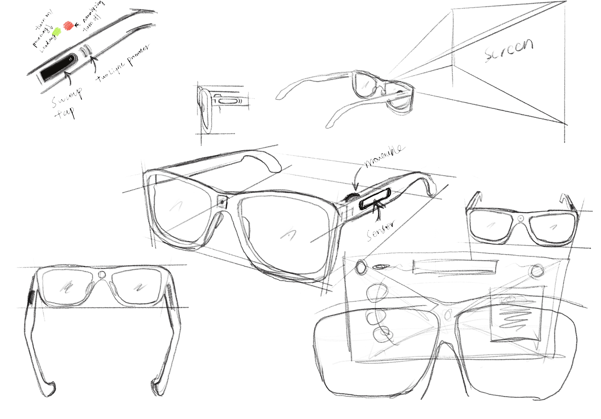

FIG 01. Sketches

FIG 02. Data Analysis & Insights

FIG 03. Wireframes
"What Does a Disaster Recovery App Mean to People Across Different Communities?"
It aims to connect those most in need with essential information, resources, and community support more quickly.
It help to unite
FIG 02. AE Interaction Demo
Case Study: Rebuild - A Disaster Recovery App